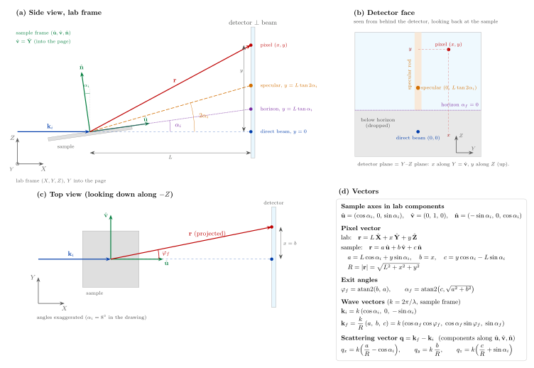

Upload the measurement
Drop the .dat and .pro files here, or choose them:
Both files are read by Python running inside this page. Nothing is uploaded anywhere.
Instrument parameters (.pro)
Only the length of the detector normal N is used: the detector is treated as perpendicular to the incident beam at distance L = |N|.
Geometry & equationsframes, conventions and every formula the app uses

Three coordinate systems
| system | axes | meaning |
|---|---|---|
| lab frame | \(X, Y, Z\) | \(X\) along the incident beam, \(Z\) vertical up, \(Y = Z \times X\) (horizontal) |
| sample frame | \(\hat{\mathbf u}, \hat{\mathbf v}, \hat{\mathbf n}\) | \(\hat{\mathbf u}\) in the surface along the beam, \(\hat{\mathbf v} = \hat{\mathbf Y}\) in the surface, \(\hat{\mathbf n}\) the surface normal |
| detector | \(x, y\) | position on the detector in mm, measured from the direct beam; the detector plane is the \(Y\)–\(Z\) plane: \(x\) along \(Y\), \(y\) along \(Z\) (up) |
The sample is tilted by \(\alpha_i\) about \(Y\). In lab components
$$\hat{\mathbf u}=(\cos\alpha_i,\ 0,\ \sin\alpha_i),\qquad \hat{\mathbf v}=(0,\ 1,\ 0),\qquad \hat{\mathbf n}=(-\sin\alpha_i,\ 0,\ \cos\alpha_i)$$All results (\(\varphi_f, \alpha_f, \mathbf k_f, \mathbf q\)) are in the sample frame: the components written \(x, y, z\) (\(k_{fx}, q_x, \dots\)) are the components along \(\hat{\mathbf u}, \hat{\mathbf v}, \hat{\mathbf n}\).
Pixel position
$$\mathbf r = L\,\hat{\mathbf X} + x\,\hat{\mathbf Y} + y\,\hat{\mathbf Z} = a\,\hat{\mathbf u} + b\,\hat{\mathbf v} + c\,\hat{\mathbf n}$$ $$a = L\cos\alpha_i + y\sin\alpha_i,\qquad b = x,\qquad c = y\cos\alpha_i - L\sin\alpha_i,\qquad R = \sqrt{L^2 + x^2 + y^2} = \sqrt{a^2+b^2+c^2}$$Exit angles, wavevectors and q
$$\varphi_f = \operatorname{atan2}(b,\ a),\qquad \alpha_f = \operatorname{atan2}\!\left(c,\ \sqrt{a^2+b^2}\right)$$ $$k = \frac{2\pi}{\lambda},\qquad \mathbf k_f = \frac{k}{R}\,(a,\ b,\ c),\qquad \mathbf k_i = k\,(\cos\alpha_i,\ 0,\ -\sin\alpha_i)$$ $$q_x = k\left(\frac{a}{R} - \cos\alpha_i\right),\qquad q_y = k\,\frac{b}{R},\qquad q_z = k\left(\frac{c}{R} + \sin\alpha_i\right)$$Equivalently \(q_x = k(\cos\alpha_f\cos\varphi_f - \cos\alpha_i)\), \(q_y = k\cos\alpha_f\sin\varphi_f\), \(q_z = k(\sin\alpha_f + \sin\alpha_i)\). The code uses the \(a/R, b/R, c/R\) form, vectorised over all pixels.
Special positions
| feature | condition | detector position | this file |
|---|---|---|---|
| direct beam | \(\alpha_f = -\alpha_i,\ \varphi_f = 0\) | \(x = 0,\ y = 0\) | – |
| sample horizon | \(\alpha_f = 0\) | \(y = L\tan\alpha_i\) | – |
| specular spot | \(\alpha_f = \alpha_i,\ \varphi_f = 0\) | \(x = 0,\ y = L\tan 2\alpha_i\) | – |
Conventions and assumptions
- The detector is perpendicular to the incident beam at distance \(L = |\mathbf N|\).
- \(x, y\) in the
.datfile are measured from the direct-beam spot. - \(\varphi_f\) increases with \(x\). BornAgain uses the opposite sign for \(\varphi_f\) and \(q_y\); this app does not.
- Angles are shown and exported in degrees; \(k\) and \(q\) in nm−1 (\(\lambda\) is in nm) or Å−1 with the toggle at the top.
Raw data
First rows (df.head())
Raw intensity map (optional)
Exit angles (x, y) → (φf, αf)
$$\varphi_f = \operatorname{atan2}(b,\ a),\qquad \alpha_f = \operatorname{atan2}\!\left(c,\ \sqrt{a^2+b^2}\right)$$
Adds 8 columns to every pixel, then drops the rows below the sample horizon.
Final wavevector kf
$$\mathbf k_f = \frac{k}{R}\,(a,\ b,\ c):\qquad k_{fx} = k\frac{a}{R},\quad k_{fy} = k\frac{b}{R},\quad k_{fz} = k\frac{c}{R}$$
Scattering vector q = kf − ki
$$q_x = k\left(\frac{a}{R} - \cos\alpha_i\right),\qquad q_y = k\,\frac{b}{R},\qquad q_z = k\left(\frac{c}{R} + \sin\alpha_i\right)$$
Drop everything below the sample horizon
For each detector row, \(\alpha_{f,\text{row}} = \operatorname{atan2}(c, a)\) at \(x = 0\); every row with \(\alpha_{f,\text{row}} < 0\) is dropped as a whole, so the data stays a rectangular image. The beamstop lies below the horizon and goes with it.
Converted table
About 31 MB compressed or 108 MB plain for a 1 Mpixel frame. 8 significant digits; a
# header records the setup. Loads with pandas.read_csv(path, comment="#").
Specular rod
Specular spot
Skipped: the specular spot lies on the masked rod.
The window starts at the predicted position \(\varphi_f = 0,\ \alpha_f = \alpha_i\). Background = median of the outer 20 % of the window; FWHM from the half-maximum crossings (linear interpolation); centre = centroid above half maximum.
2D intensity maps
Every pixel is drawn as one point coloured by its counts: no averaging, no regridding.
1D profiles: mean counts per pixel
Averaged along the detector grid (columns for φf, qy; rows for αf, qz). NaN pixels are ignored; a fully masked column or row is drawn as a gap.
Download plots
Each plot is redrawn with matplotlib in the style chosen at the top (Publication: journal column width; Presentation: 16 pt text, thicker lines, 8 × 6 in). In 2D maps the point layer is rasterised at 600 dpi; axes, labels and colour bar stay vector in the PDF. Colour scale, log setting and q unit follow what is on screen.
- Tick a plot in steps 4, 12 or 13 to list it here.